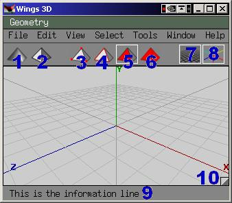

Wings3D/Interface
Getting started
Assumptions: That you have Wings3D downloaded and installed, and that you have at least some basic experience with UnrealEd. Other than that, you're allowed to n00b it up here 
Essential Terminology
- Scene - The file you have open, or the world you're creating your shape 'in'
- Element - Any object (a vertex, edge, face, or object) in your scene
- Face - A flat surface of your shape, like a side on a box
- Edge - The line where two faces meet
- Vertex - The point where two or more edges meet
The Environment
Buttons:
|

|
Menus:
It's important to note that a lot of the preferences are attached directly to the item they control. Thus, you need to look for the Edit Preferences () symbol. When you click this menu item, it will open a menu to edit those preferences (the logo is a seperate menu item from the text part).
File Menu
New, Open, Save, Save As, Exit - These shouldn't need explaining.
- Merge - Add another scene into the one you're editing
- Save Selected - Save the file, but drop anything that isn't currently selected
- Save Incrementally - Not a clue. Could be some kind of autosave?
- Revert - You guess it, panic and go back to the last save (goes back to when you opened the file, or when you last saved it, whichever is later).
- Import - Open a file of the Nendo, 3D Studio, Adobe Illustrator, Wavefront, or Stanford ply types. You'll more than likely be working with 3DS files.
- Export - Save the file as Nendo, 3D Studio, Hash A:M, Wavefront, or VRML. You'll more than likely be exporting 3DS files.
- Export Selected - Save only the selected objects as any of the Export types except Hash.
- Import Image - I haven't managed this without a crash. Thus I don't know how it inserts the image.
- Render - Shows what the shape might look like rendered.
- Install Plug-In - Installs a plugin if you have one.
Edit Menu
Undo and Redo shouldn't need explaining.
- Undo/Redo - Same as undo, except that if the last thing you did was undo an action, this will redo that action. Good for toggling back and forth to see how a change looks.
- Repeat and Repeat - The difference between these two is that the first repeat will repeat the menu action, but not the action itself. The second will repeat both. EXAMPLE: If I have a cube, enter the context menu, then scale it up 200%, the first repeat would do everything up to the point of clicking the menu item, i.e. it would wait for me to tell it how much to scale again. The second repeat would execute the menu choice, and then scale it the exact same amount.
- Camera Mode - Opens a subdialog to edit camera preferences:
- Mouse Buttons - How many buttons you want to use for the camera
- Camera Mode - If you are used to the camera in Nendo, Maya, 3DS Max, Blender, or MotionBuilder, then you can set W3D's camera to behave the same way here. Mirai, I believe, is the author's own style. This tutorial uses Mirai for simplicity. (Remember to watch your information bar for button information)
- Pan Speed - Set the speed that the camera moves when adjusting
- Scroll Wheel - Set wether your wheel will zoom in and out, and by how much each unit.
- Field of View - The angle in front of you that you can see. 45% is recommended.
- Near/Far Clipping Planes - The near and far distances that objects will disappear at.
- Font - Choose the size you want the screen font to be.
- Preferences, Compatibility, Adv. Prefs, Proxy Mode Prefs, UI Prefs, Plugin Prefs - Various settings (See Appendix: Preferences)
- Purge Undo History - Exactly what it sounds like it does. Empties the record of what you've done (I recommend saving instead.)
View Menu
- Ground Plane, Axes - Same thing as buttons 7 and 8
- Workmode - Same thing as button 1
- Wireframe - View selected objects as wireframes (or view everything as wireframe, if nothing is selected)
- Shade - Toggle shading on/off for selected objects (or everything if nothing selected)
- Toggle Proxy Mode - Swaps selected objects out for a 'proxy', or kind of a stand-in shape for quick rendering? (not sure on this one)
- Quick Smoothed preview - Same as Toggle Proxy, but works on ALL objects.
- Show Saved BB - "Display any saved Bounding Box"
- Show Edges - Show edges in views other than wireframe (can be very useful if you need to see face boundaries)
- Show Wireframe Backfaces - Show parts of a wireframe that would normally be hidden from view by the rest of the shape
- Show Normals - Not sure what this one does. Someone help meeeeeee!!!

- Reset View - Resets to the normal position for the camera to be in
- Aim - Point the camera at the selected objects
- Frame - Move to show ALL selected objects
- Orthographic View - Same as button 2
- Scene Lights - Render using lights defined in the scene
- Two Lights - Render using two default 'work' lights
- Show Colors - Render in color
- Show Materials - Render with shinyness, opacity, etc
- Show Textures - Render with texture mapping (Don't know if this is supported)
- Show Info Text - Show the informational text at the top left of the window
- View Along - This will move the camera to show the object along the X, Y, or Z axis. For example, view along X will place the camera on the positive X axis, looking at the object. (-X will put it on the other side)
- Align to Selection - Not sure here either
- Auto Rotate - Sets the camera rotating on its own.
Select Menu
Deselect, Adjacent, Inverse are all the same as in UnrealEd
- More - Select faces adjacent to a selected face
- Less - Deselect faces adjacent to an unselected face
- Similar - Select similar faces
- Edge Loop >
- Edge Loop - Select the edges of the selected face.
- Edge Loop to Region - Select faces defined by the selected edge loop (must have an edge loop selected)
- Edge Ring - From what I can tell, this selects all parallel edges on the same object
- Previous/Next Edge Loop - Selects the previous or next edge loop on the same plane?
- Grow/Shrink Edge Loop - Same thing as More or Less, but you're operating on the edge loop of the faces, not the faces themselves.
- Grow/Shrink Edge Ring - Possibly adds/subtracts one more parallel edge to/from your edge ring? Not sure.
- By - Basically a select by query tool. For example, select ALL Hard Edges, ALL Isolated Verticies, etc. Mainly used for debugging/cleaning up.
- Lights - Select all lights
- All Edges - Select all edges
- Inverse - Select everything that's not selected, and deselect everything that is selected.
- Hide (Un)selected - Hide everything that is(n't) selected
- Lock Unselected - Prevent changes to anything not selected
- Show/Unlock all - Show/Allow changes to everything
- Store Selection - Save your selection so you can get it back
- Recall Selection - Get your saved selection back
- New Group - Create a group of elements
Tools menu
- Align - Not too sure yet...
- Center - Center the selected element(s) on the selected axis.
- Save Bounding Box - Save the bounding box of the selected object.
- Scale to saved BB (proportionally) - Scale the object to fit its bounding box
- Move to saved BB - Move the object to share a center with its bounding box
Note that all the above (except save BB) can be done on any axis, or all 3)
- Set default axis - When clicked, this activates a special selection mode. When you click a face, edge, or vertex, this will set the default axis that changes to the object will follow. (Verticies give the line vom the object center to the vertex, faces give the line from the center of the object to the center of the face, edges give a ling along the edge itself.
- Virtual Mirror:
- Create - Show what it would look like if the current geometry was mirrored in a face (select 1 face per object you want to mirror)
- Break - Stop mirroring for ALL objects
- Freeze - Create real geometry where the virtual mirror shows it would be
- Snap image - Works with Import image somehow
- Tweak - VERY freeform vertex/edge/face editing mode
Window menu
- Outliner - Shows all the parts of your scene as a list
- Geometry Graph - Shows list of objects, and options to hide/lock/wireframe them
- New Geometry Window - Opens another view of your scene
Help menu
Go here to get help. No, I'm not going to tell you how
Related links
Wings3D/First Shape - Next part of the tutorial (Under Construction)
Wings3D/Getting Started - Back where you came here from
This page thrown in your general direction by DUc0N
Comments
Tarquin: Please replace this image [numbered layout shot] with a PNG. It will probably be smaller.
dUc0N: I tried it, and the PNG was over 200K where the JPG was only 51K. I replaced it with a scaled-back version of the JPG. 
Ironblayde: That's surprising... did you take a screenshot and save it directly to PNG (good), or did you try to convert the existing JPG to PNG (bad)?